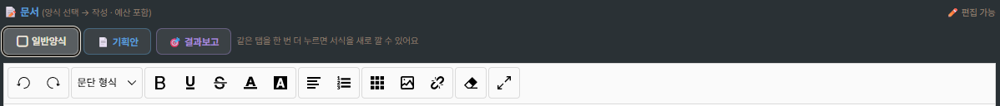
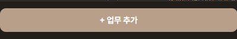
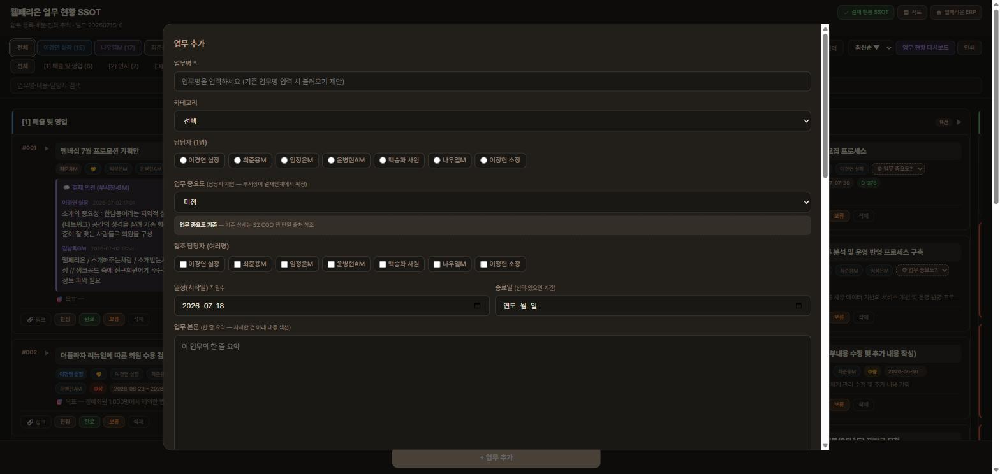
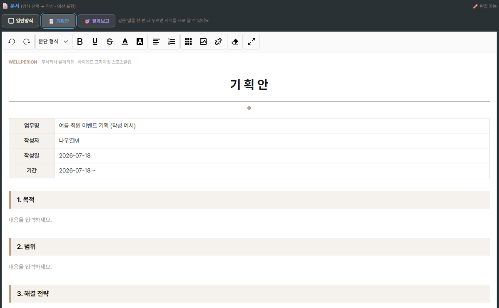
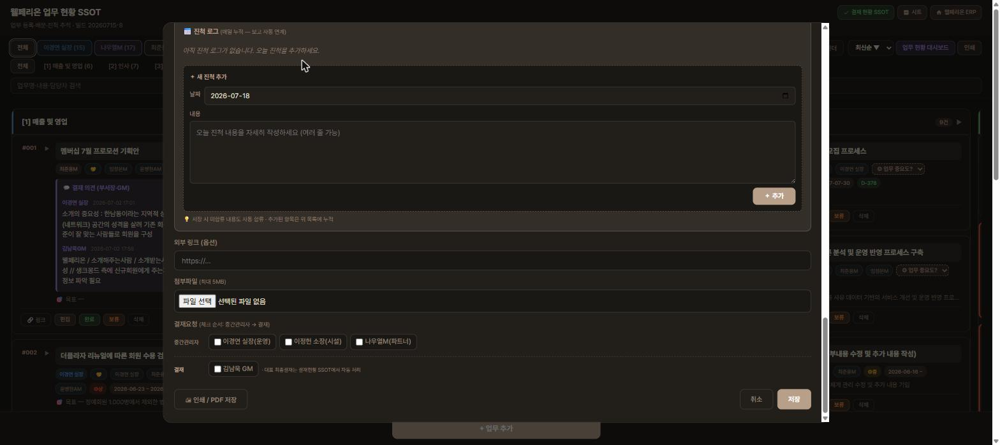
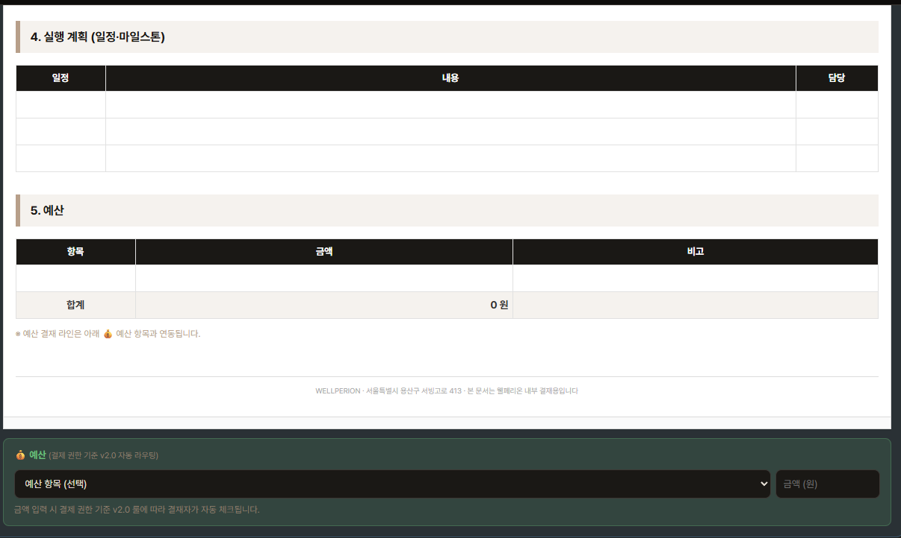
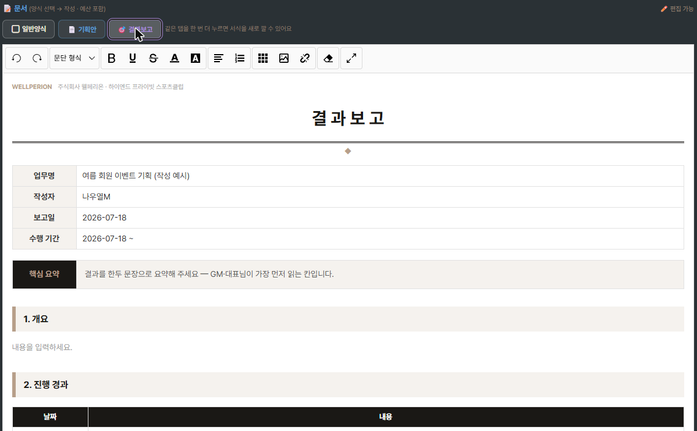
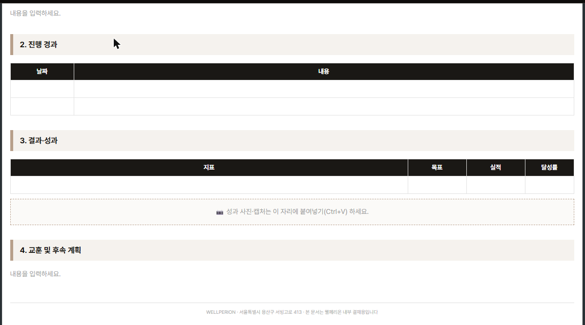
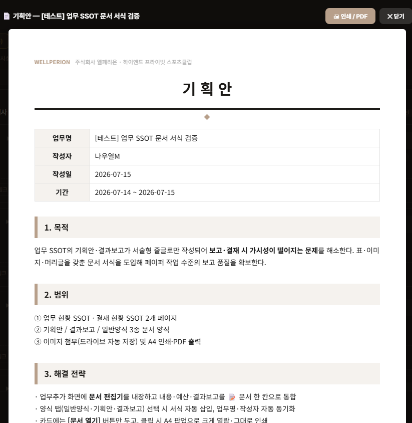

WELLPERION
주식회사 웰페리온 · 하이엔드 프라이빗 스포츠클럽
기획안 · 결과보고 작성 가이드
◆
이제 한글·워드 파일 없이, 웰페리온 ERP 업무 카드 안에서
정식 서식으로 기획안과 결과보고서를 작성합니다.
1. 무엇이 달라졌나요?
업무 현황 페이지의 업무 추가·편집 화면에 문서 편집기가 들어갔습니다.
업무마다 📄 기획안과 🎯 결과보고서를 회사 공식 서식으로 바로 작성할 수 있고,
작성한 문서는 업무 카드와 결재 화면에 자동으로 연결됩니다.
핵심 변화 3가지
- 별도 파일 작성·첨부 불필요 — 업무 카드 안에서 작성하고 저장하면 끝
- 탭 한 번 클릭으로 공식 서식이 자동으로 깔립니다 (업무명·작성자·날짜 자동 기입)
- 작성된 문서는 결재 화면·인쇄(보고서)까지 자동 연동
2. 문서 양식 3종
업무 추가·편집 화면의 📝 문서 칸 위에 탭 3개가 있습니다. 필요한 탭을 누르면 됩니다.
⬜ 일반양식
서식 없는 빈 흰 문서. 간단한 메모·자유 형식 내용을 적을 때 사용합니다.
📄 기획안
업무를 시작하기 전 계획을 세울 때. 목적·범위·전략·일정·예산 서식이 자동으로 깔립니다.
🎯 결과보고
업무를 마친 후 결과를 보고할 때. 핵심 요약·경과·성과·교훈 서식이 자동으로 깔립니다.

▲ 실제 화면 — 📝 문서 칸 위의 양식 탭 3종. 원하는 탭을 누르면 아래 편집기에 서식이 깔립니다.
TIP같은 탭을 한 번 더 누르면 "서식으로 새로 시작할까요?" 확인 후 서식을 새로 깔 수 있습니다.
3. 작성 방법 (기획안 기준)
- 업무 현황 페이지에서 + 업무 추가 또는 기존 업무 카드의 편집을 엽니다
업무명·담당자·기간을 먼저 입력해 두면 서식에 자동으로 채워집니다.

▲ 화면 하단에 항상 떠 있는 [+ 업무 추가] 버튼

▲ 실제 화면 — 버튼을 누르면 열리는 입력 화면. 업무명·담당자·일정부터 입력하세요.
- 📝 문서 칸에서 📄 기획안 탭을 클릭합니다
웰페리온 공식 서식이 자동으로 깔리고, 업무명·작성자·작성일·기간이 자동 기입됩니다.

▲ 실제 화면 — 탭 한 번에 서식이 깔리고, 위에서 입력한 업무명·작성자·날짜가 자동으로 채워진 모습.
- 각 항목의 "내용을 입력하세요." 자리를 지우고 내용을 채웁니다
표에 줄이 더 필요하면 편집기 메뉴의 표 기능으로 행을 추가할 수 있습니다.
- 사진·캡처는 복사해서 그대로 붙여넣기(Ctrl+V) 하세요
이미지가 자동으로 업로드되어 문서에 들어갑니다. 파일 첨부 과정이 따로 없습니다.
- 저장 버튼을 누르면 완료
화면 맨 아래의 저장 버튼을 누르면 업무 카드에 📄 기획안 문서 열기 — A4 크게 보기 ▸ 버튼이 생깁니다.

▲ 실제 화면 — 화면 하단. 결재가 필요하면 결재요청에 체크하고, 오른쪽 아래 [저장]을 누릅니다.
🎯 결과보고도 같은 방법입니다 — 탭만 🎯 결과보고를 누르면 됩니다.
4. 서식 구성 미리보기
📄 기획안 서식

▲ 실제 화면 — 기획안 서식 아랫부분. 실행 계획·예산 표가 미리 그려져 있어 칸만 채우면 됩니다.
🎯 결과보고 서식

▲ 실제 화면 — 결과보고 서식 윗부분. 검은 핵심 요약 칸이 이 서식의 얼굴입니다.

▲ 실제 화면 — 결과보고 서식 아랫부분. 성과 표 아래 점선 칸에 사진을 그대로 붙여넣기(Ctrl+V) 하면 됩니다.
5. 열람과 인쇄

▲ 실제 화면 — A4 크게 보기. 종이 그대로 보이고, 오른쪽 위 [🖨 인쇄 / PDF]로 바로 출력·저장할 수 있습니다.
6. 자주 묻는 질문
서식만 깔아두고 아직 내용을 못 썼는데, 빈 서식이 보고서에 나가나요?
아닙니다. 서식만 깔고 내용을 쓰지 않은 문서는 저장·카드·인쇄에서 자동으로 제외됩니다. 안심하고 서식을 깔아두셔도 됩니다.
저장한 문서를 나중에 수정할 수 있나요?
네. 업무 카드를 열어 편집하면 됩니다. 결재를 올린 뒤에도 결재자가 실제로 결재하기 전까지는 그대로 수정할 수 있습니다. 기획안이 잠기는 시점은 결재가 완료된 뒤이며, 🎯 결과보고는 결재 상태와 관계없이 언제든 작성·수정할 수 있습니다.
회의 업무에는 기획안 탭이 안 보여요.
회의 카테고리는 참석자별 회의 칸을 사용하므로 일반양식·기획안 탭이 숨겨지고 🎯 결과보고만 사용합니다. 정상 동작입니다.
기획안을 쓰다가 일반양식으로 바꾸면 내용이 사라지나요?
바로 지워지지 않습니다. "서식 내용을 지우고 빈 문서로 시작할까요?" 확인창이 먼저 뜨고, 취소하면 기획안 내용이 그대로 유지됩니다.
업무명이나 담당자를 나중에 바꾸면 서식 안의 값도 바뀌나요?
네. 편집 화면 상단의 업무명·담당자 입력값이 서식 안의 업무명·작성자 칸과 실시간으로 동기화됩니다.
7. 바로가기
문의: 경영지원부 나우열 매니저